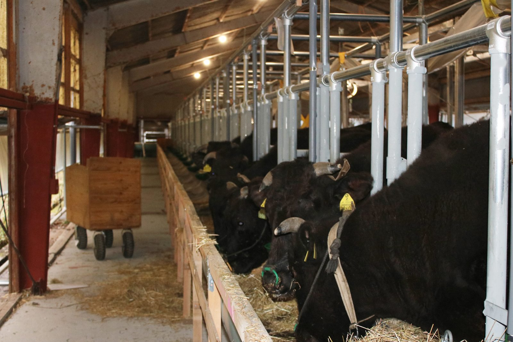
TAJIMA CATTLE
母牛の乳で、元気で病気に強い子牛を育てる
兵庫県で受け継がれてきた黒毛和牛、但馬牛（たじまうし）。
丹波農商は、その子牛を産み育てる「繁殖」の牧場です。
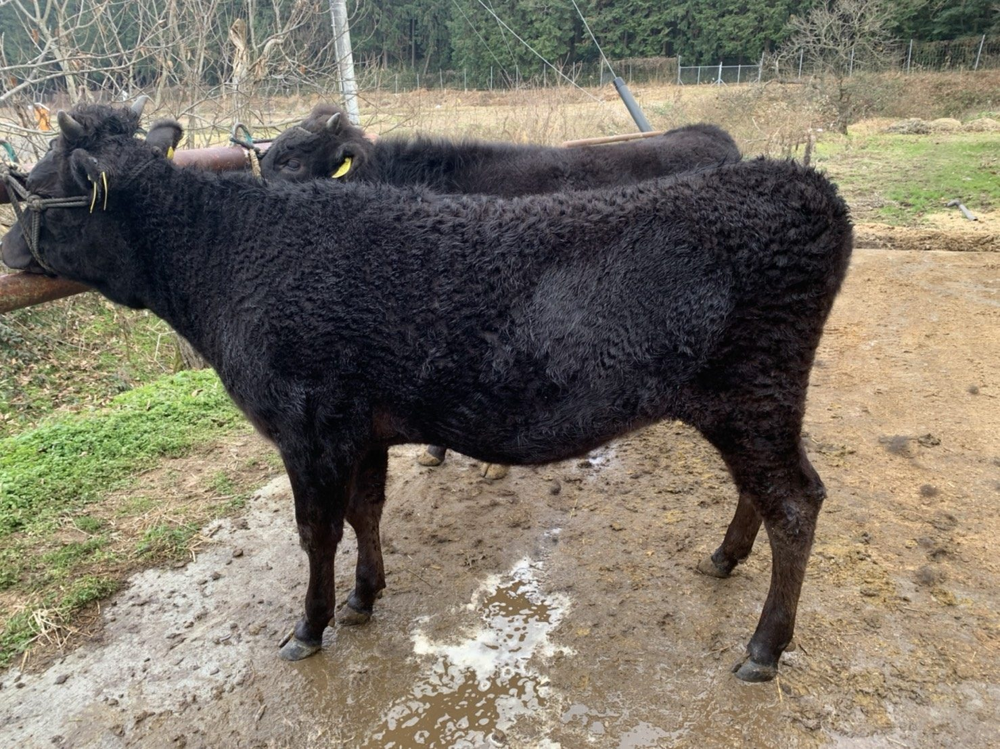
血統但馬牛は、兵庫県で長い年月をかけて血統が守られてきた黒毛和牛です。県内で生まれ育った血筋を大切にし、きめ細かな肉質の牛として知られています。
 神戸ビーフ
神戸ビーフ
「神戸ビーフ」は、兵庫県の但馬牛のうち、厳しい基準を満たしたものだけが名乗れる名前です。全国の和牛のブランドにも、但馬牛の血が広く受け継がれています。
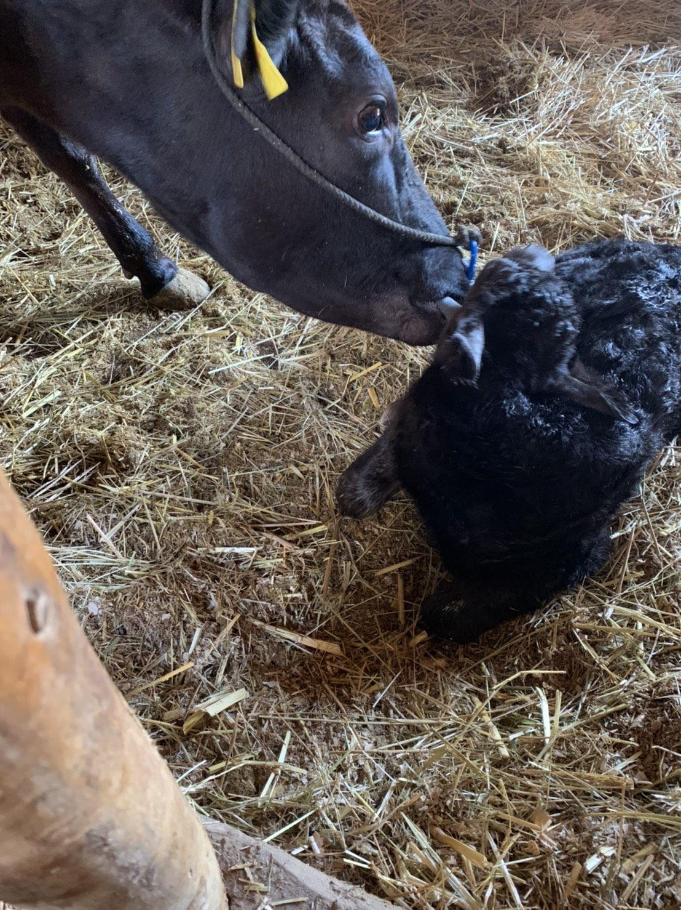
繁殖和牛の仕事は、子牛を産み育てる「繁殖」と、子牛を大きく育てる「肥育」に分かれます。丹波農商は繁殖の牧場として、母牛にお産をさせ、育てた子牛を子牛市場へ送り出しています。
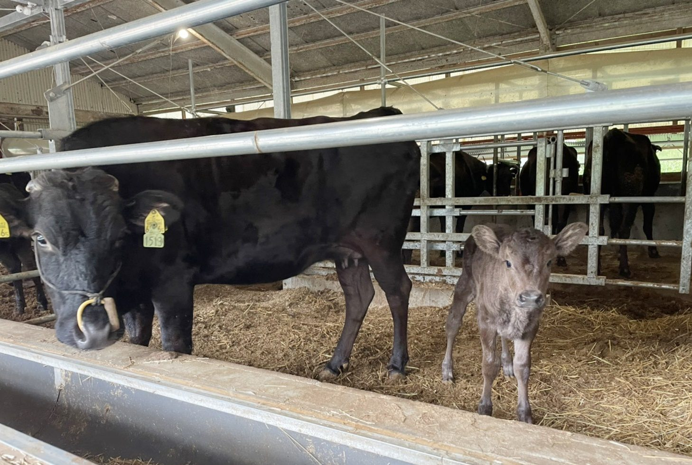
代表の大塩は、県内の牧場で修行したのち、2019年に地元・丹波市市島町で独立しました。但馬牛の繁殖は、2019年、2頭の母牛から始まりました。
翌2020年の春に最初の子牛が生まれ、2021年には20頭に。牛舎を整えながら少しずつ頭数を増やし、いまは母牛と子牛を合わせて100頭を超える牛を育てています。
牛・牧草・堆肥・米・栗をつなぐ循環型農業について※ 母牛・子牛の頭数は2026年10月5日時点、子牛市場への出荷は2021年1月〜2026年7月の累計（自社の牛の管理記録より）。
元気で、病気に強い牛に。
そのために、3つのことを大切にしています。
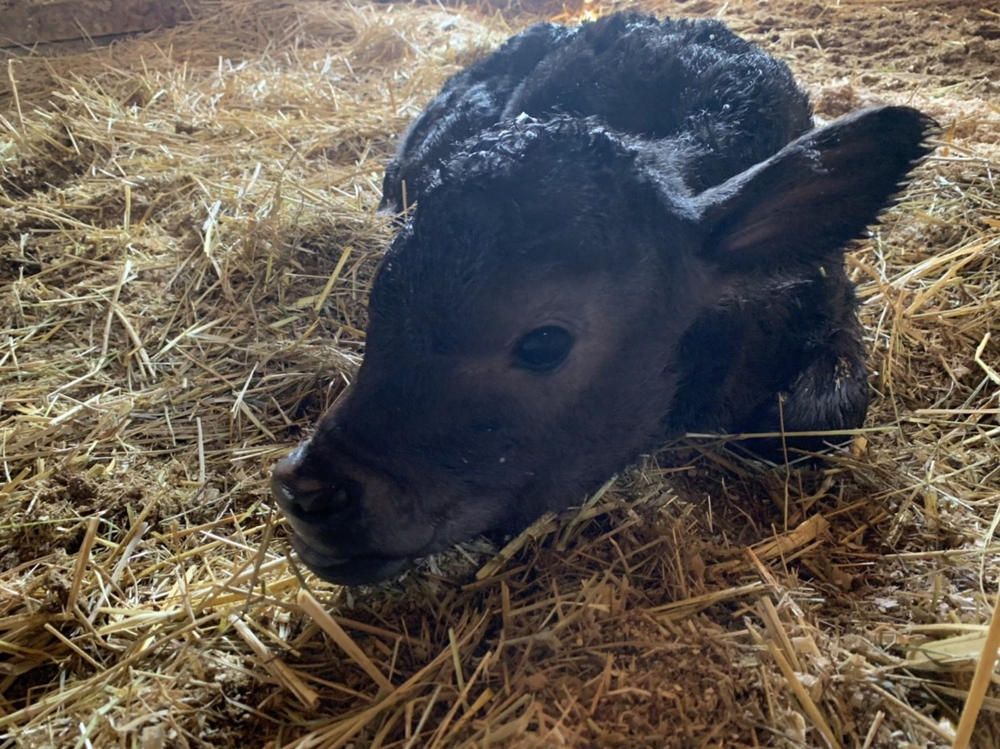
01子牛は早期離乳をせず、なるべく母牛の乳で育てます。はじめに免疫をしっかりつけることが、病気に強い牛への近道だと考えています。
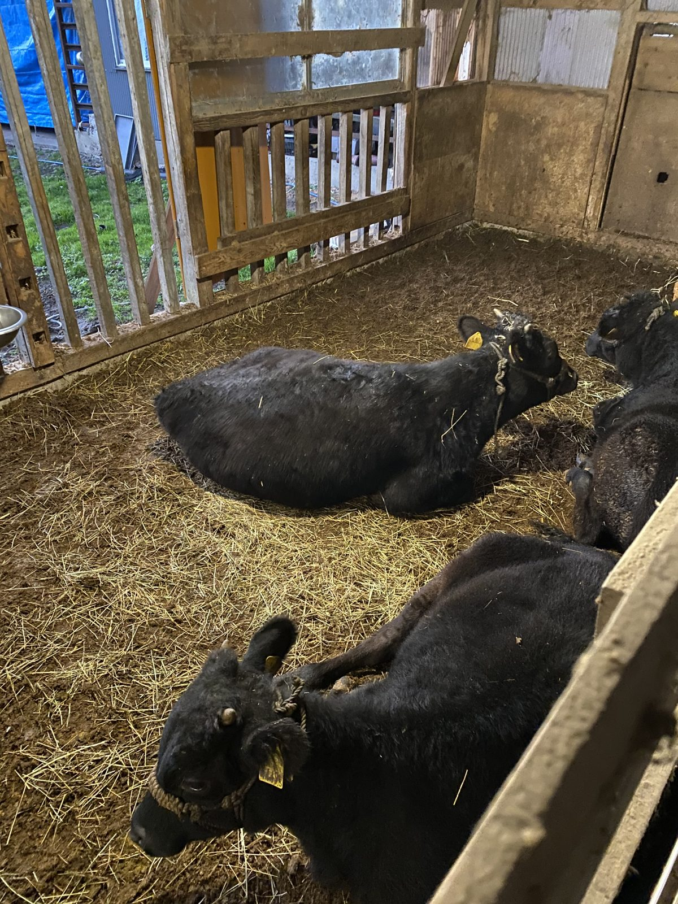
02初めてお産をする母牛は、つなぎ牛舎ではなく個室で過ごします。ストレスを減らし、落ち着いてお産に臨めるようにしています。
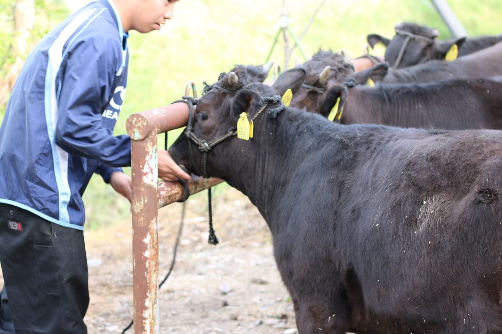
03毎日、エサの食べ方や様子の変化に気を配ります。種付け・お産・子牛の育ちは一頭ずつ記録に残し、勘だけに頼らず、数字でも牛の調子を確かめています。
頭数が増えるのに合わせて、新しい牛舎を整えました。
山あいの、風の通る場所です。
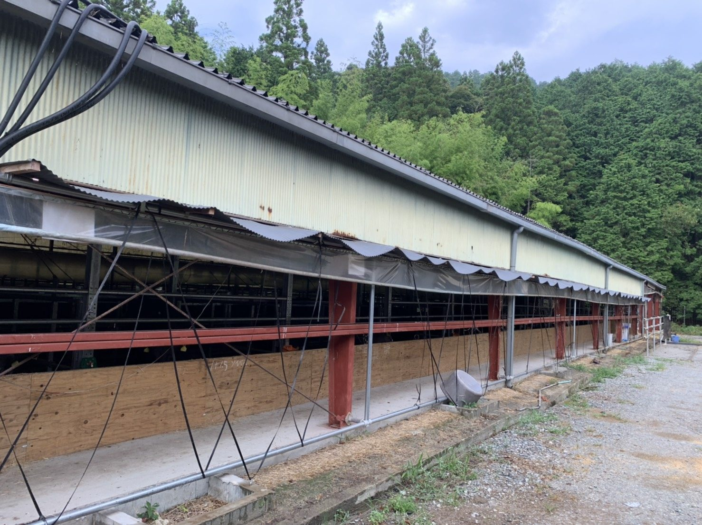
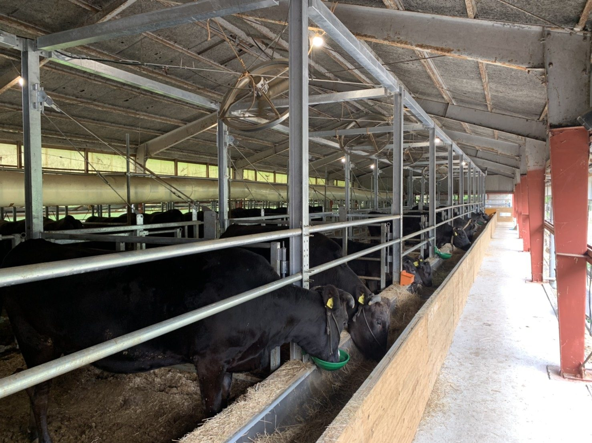
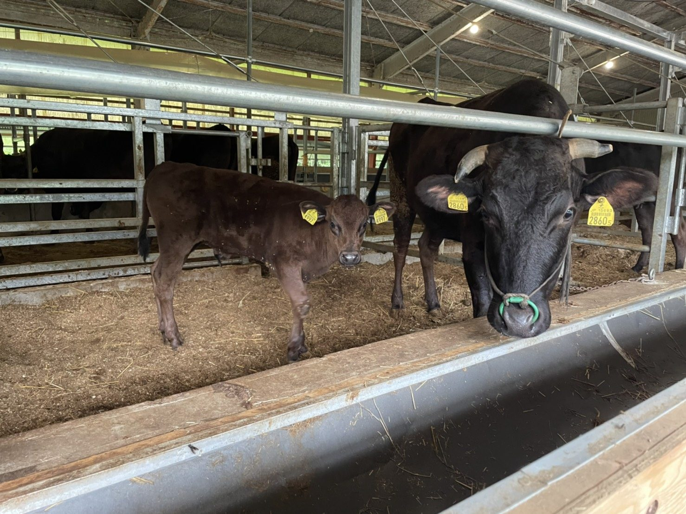
牛の寝床には、稲作で出るもみ殻や稲わらを使います。使い終わった寝床は牛ふんと一緒に堆肥になり、また田畑へ還っていきます。
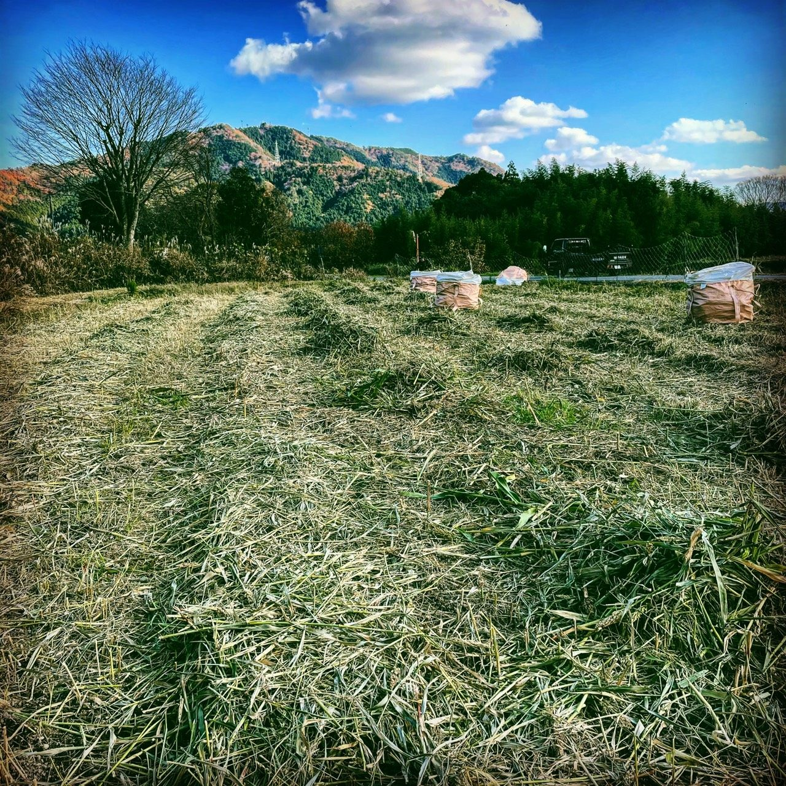
牧草牛が食べる牧草は、グループ会社の株式会社丹波土匠が育てています。使われなくなった田畑を耕し直して牧草地に。輸入の飼料にたよりすぎず、地域の草で牛を育てることを目指しています。
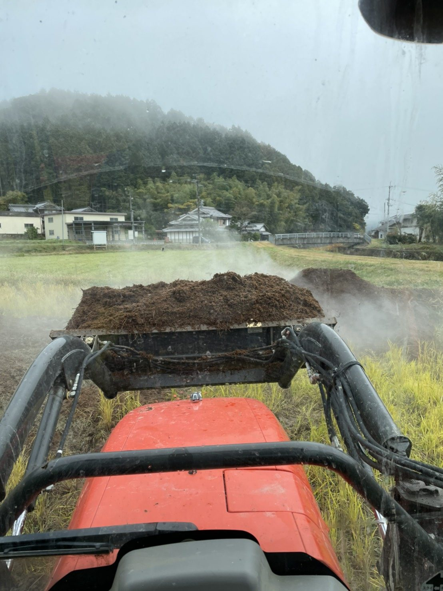
堆肥牛ふんともみ殻でつくった堆肥は、自社のお米や丹波栗の田畑に入れるほか、丹波市内や朝来市の農家さんの田畑へも散布しています。牛と草と土と米が、ひとつの輪でつながっています。
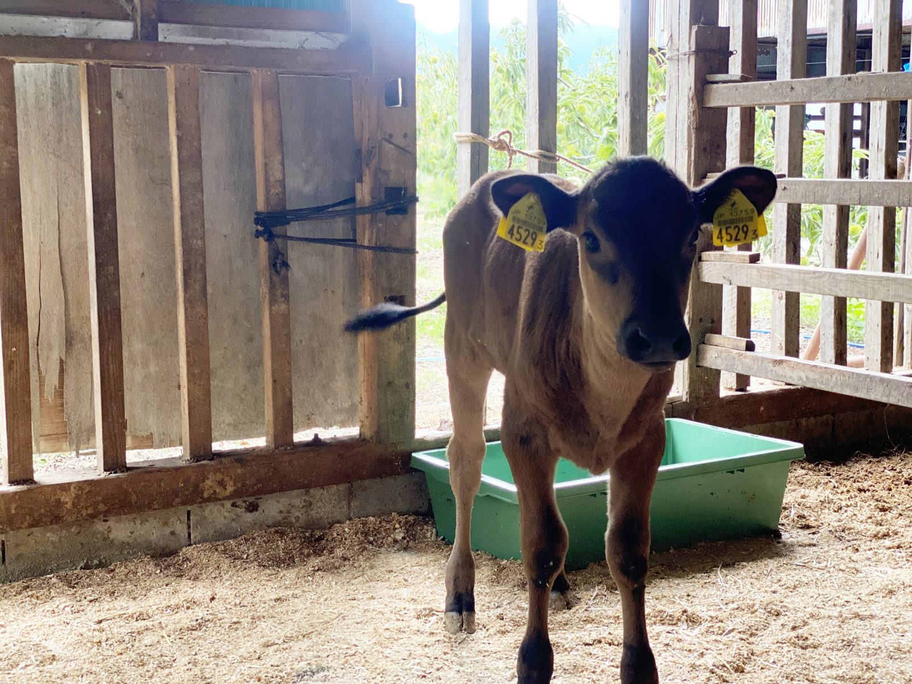
母牛の乳で育った子牛は、生後およそ9か月で子牛市場（せり）に出荷します。
2021年1月に最初の子牛を出荷してから、これまでに157頭を送り出しました。2025年は1年で45頭です。
市場で買われた子牛は、肥育農家さんのもとで大きく育てられ、やがて但馬牛として食卓へ届きます。次の牧場で元気に育ってもらえるよう、丈夫な体づくりを何より大切にしています。
子牛一頭ずつの育ちと市場での評価を記録し、成績のよい母牛の血を引く雌の子牛を、次の母牛として残していきます。
牧草地を広げ、牛が食べる草をできるだけ自分たちでまかなえるようにしていきます。
将来は子牛を大きく育てる肥育にも取り組み、丹波で生まれ育った但馬牛を届けることを目標にしています。

丹波市市島町出身。高校卒業後、兄が営む飲食店に入社し、自分の料理でお客様に喜んでもらう楽しさを知りました。やがて食材から自分でつくりたいと地元に戻り、県内の牧場で修行。2019年に独立し、従兄の栗原と丹波農商を立ち上げました。
母牛の種付けからお産、子牛の世話、市場への出荷まで、牛の仕事をまとめています。「元気な牛、美味しい農作物を育てる」が信条です。